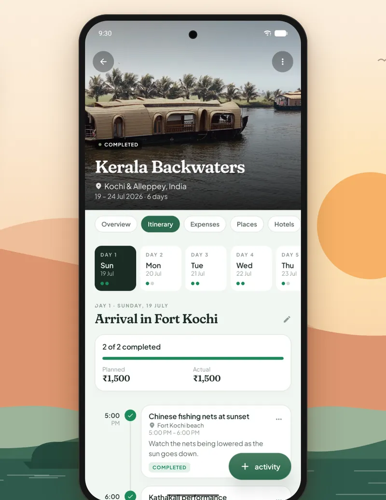

Plan
Plan each day, hour by hour.
Build a day-by-day itinerary and tick things off as you go.
- Times, places and notes for every activity
- Drag to reorder the day
- Hotels, bookings, places and useful contacts kept with each trip